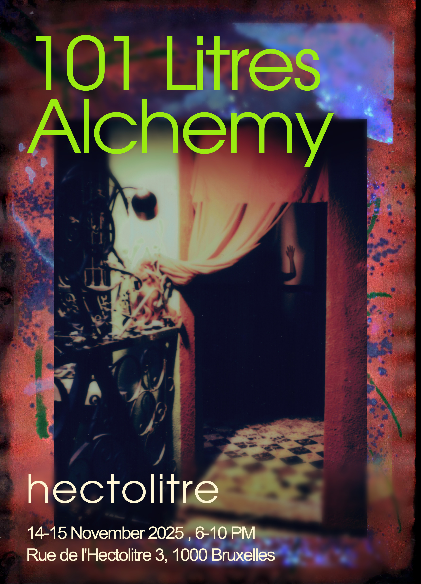

101 Liters Alchemy
by Melanie Ganino, Chris-Armel Iradukunda, Stef Assandri, Gregor Petrikovič, Maria Stuut & Jere, annat maria MaratKovich, Emily Zuberec, Borderdisorder + Asli Hatipoglu & Tehani Amarasuriya cooking
The doors are open. The threshold is humming.
You are invited to cross into Reactor — a space where distortion, ritual, and digital/analog alchemy coexist in a fragile dance.
We toast collectively, chaotically to collaboration and transformation. To lichen mutants and AI extensions, to the poetry of borders, to the infinite loop of suffering turning into wellbeing.
A ritual begins somewhere between one and zero, between autumn and static. Cheers to the distorted voices of more-than-human intelligence rippling through the house, unsettling walls.
Reactor is where digital minds read poetry in physical air. Where silence interrupts noise for the benefit of new speech.
Cheers to everything that is still mutating.
Friday & Saturday, 14th & 15th of November, 2025(6pm-10pm)
@Reactor, Rue de l'Hectolitre 3, Brussels
Friday
17:00h Doors Open
19:00h Workshop by Stef Assandri: “Los ecos del silencio” (1h15')ENGL
Exhibition:
Chris-Armel Iradukunda- Performative Installation: Prototypes & Research for "Twofold Alienated"ENGL/FR
Gregor Petrikovič- Polaroid series: "Malum Mostra"
Melanie Ganino & Maria Stuut- performative installation:" Quantic pool stories, on rat war and other possibilities "
Emily Zuberec- FIRST ENCOUNTER / TOURING MONUMENTS
Anat Martkovich- "objets trouvés"
PANDAN: Thai- Sri Lankan pop-up kitchen by Asli Hatipoglu & Tehani Amarasuriya
22:00h Doors close
Saturday
17:00h Doors Open
20:00h Music performance by Jere: "Electric transition" ft Maria Stuut (45')ESP/ENGL
21:00h Performance by Borderdisorder(40')ENGL/YU
Ongoing Exhibition:
Chris-Armel Iradukunda- Performative Installation: Prototypes & Research for "Twofold Alienated"
Gregor Petrikovič- Polaroid series: "Malum Mostra"
Melanie Ganino & Maria Stuut- performative installation:" Quantic pool stories, on rat war and other possibilities "br>
Emily Zuberec- FIRST ENCOUNTER / TOURING MONUMENTS
annat maria MaratKovich- "objets trouvés"
PANDAN: Thai- Sri Lankan pop-up kitchen by Asli Hatipoglu & Tehani Amarasuriya
22:00h Doors close
Accessibility: For accessibility inquiries, please contact us via direct message to arrange support.
Participating Artists
Melanie Ganino @melanie.ganino weaves her practice around photography, worldbuilding and witchcrafting into magical objects and daily allies for transformation.
∿
Gregor Petrikovič @gregor_petrikovic is an artist and filmmaker exploring human connection and alienation in the digital age through a blend of philosophy, movement, and visual storytelling.
∿
Chris-Armel Iradukunda daqhris, a.k.a. Chris-Armel Iradukunda in his expired passport, is an interdisciplinary artist from Burundi (b. 1992). For many human years, he documented his walks all around Belgium by using an art form that was guilty of throwing him in exile: photography.
∿
Jere @hola.jere.ps is a musician, songwriter, poet and fanzine artist that tries to put the focus on everyday hidden magic.
∿
Maria Stuut @schaarbeekseblikken is a biologist turned artist with an inexplicable fondness for cabbage, working with film, performance, music, and writing. With a microscope in one hand and a mirror in the other, she lets her body wander into encounters, exploring her environment through a personal, lyrical and tragicomic lens.
∿
Emily Zuberec @emilyzuberec100 Bio: Emily Zuberec is a writer and cultural worker who lives between Tiohtià:ke/Montréal, CA and Brussels, BE. She is the founder and managing editor of Commo Magazine, the public programmer at Dye Jardin Papillon community garden, and the co-founder of the reading series One Long One.
∿
annat maria MaratKovich@mrs. Kovich is an artist, writer, researcher and illustrator exploring everyday experiences through critical speculative fiction, material foraging, dressing up and daydreaming.
∿
stef assandri@tif.assandri is an artist, researcher and designer. Born in Montevideo in 1989. In recent years, they have been exploring and researching practices that relate migration, gender, anti-speciesism, through writing, performance and costumes.
∿
(B)ORDER DI3ORDER is a sensory, sound, and performative project—a cathartic cleansing and a magic spell against the increasingly toxic relationship between EEA and non-EEA countries on the continent. We present a three-act performance, carried by algorithmic and allegorical poetry, rudimentary electromagnetic noise, heavy bass kicks, dungeon synth melodies, anti-visuals, ecstatic dance, and the uneasy voices of a Balkan women's choir.
∿
PANDAN: Thai- Sri Lankan pop-up kitchen by Asli Hatipoglu & Tehani Amarasuriya
Aslı Hatipoğlu (TH/TR) is an interdisciplinary artist whose social practice focuses on curating participatory dinners and installations that shed light on how culinary history and agricultural politics are changing our relationship to food.
Tehani Amarasuriya is a multi-disciplinary artist from Sri Lanka who strives for her work to be anti-capitalist, political and queer.
MENUE
Oyster mushroom spiced potato croquettes with fermented smoked tomato relish served with pickles (€ 6,50)
Thom kha pumpkin coconut soup with coriander and chilli (€ 7)
Steamed jasmin rice with Thai hunglay curry or Thai yellow curry with sweet potatoes, Sri Lankan spiced seasonal vegetable curry, lacto-fermented pickles and fresh coconut cucumber salad (€12,50)
Coconut panna cotta with fermented dragon fruit or plum sauce with coconut crumble (€4)
Vegan and gluten free are all available.
Drinks: homemade kefir and kombuchas
∿
bring cash!! <3<3<3
See you soon!!